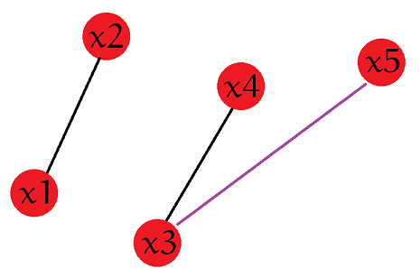
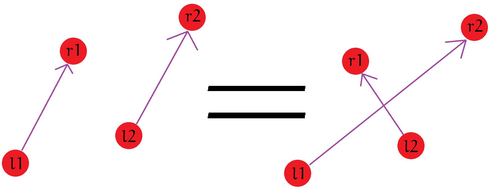

给出 天的股票价格，每天可买进或卖出一股，可以同时买进或卖出，也可以不操作，但最终手上只能有一股。问最多 次买进和卖出后的最大收益。
我们先来看一个 的做法。首先我们考虑如果是一段连续的递增股票，那我们相当于是一开始买进，最后卖出。如果这样连续的段小于等于 ，那么就直接可以返回答案了。如果比 大，那么我们就需要做出这样两种选择：要么选择一个上升的区间放弃，要么选择一段下降的区间把两段上升的区间给连起来。这个东西我们可以用一个堆或者 set 来维护。
但是我们还有一个 的做法，需要观察一些性质。我们把读入的股票看成是一个个单调不减的区间。当然有些区间可能只有一个数。
我们考虑一些区间可以合并成一个等价的区间，我们考虑将区间从左往后一个个加入。我们再开一个数组 ，记录那些不可能跟后面的区间合并的区间。
我们首先可以得到一个结论：在任一时刻对于那些可能与后面合并的区间，其买入时的价格一定是单调递增的。因为如果不是递增的，如下图情况，原来默认的匹配是 ，，现在加入了一个右端点 （左端点在哪儿我们并不需要关心），如果 跟 配，那显然不如 跟 配，因为这样不仅节省了一段区间（），答案还更优。

我们还需要发现一个性质，那就是如果现在有两个区间 ，如果有 且 ，我们可以把它等价成为 这样两段区间。而 是不可能再跟后面的匹配了，所以我们可以直接将其扔进 中。

根据这样两个性质，我们可以得到很多个区间。不难发现这些区间是独立的。最后我们取前 大的区间即可。
具体代码可以 戳这里。